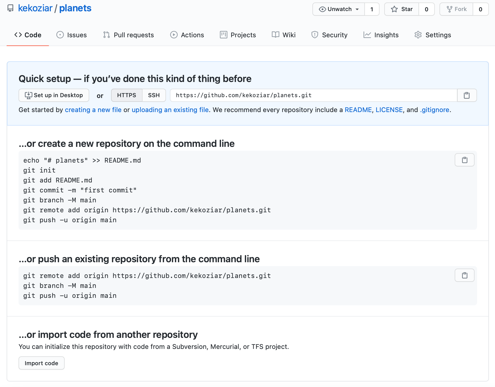

Using git with Github#
Github#
Version control really comes into its own when we begin to collaborate with other people. We already have most of the machinery we need to do this; the only thing missing is to copy changes from one repository to another.
Systems like Git allow us to move work between any two repositories. In practice, though, it’s easiest to use one copy as a central hub, and to keep it on the web rather than on someone’s laptop. Most programmers use hosting services like GitHub, Bitbucket or GitLab to hold those main copies; we’ll explore the pros and cons of this in a later episode.
Let’s start by sharing the changes we’ve made to our current project with the world. To this end we are going to create a remote repository that will be linked to our local repository.
1. Creating a remote repository#
Log in to GitHub, then click on the icon in the top right corner to
create a new repository called planets:

Name your repository “planets” and then click “Create Repository”.
Note: Since this repository will be connected to a local repository, it needs to be empty. Leave “Initialize this repository with a README” unchecked, and keep “None” as options for both “Add .gitignore” and “Add a license.” See the “GitHub License and README files” exercise below for a full explanation of why the repository needs to be empty.

As soon as the repository is created, GitHub displays a page with a URL and some information on how to configure your local repository:
This effectively does the following on GitHub’s servers:

{kind=link}
mkdir planets
cd planets
git init
If you remember back to the earlier where we added and
committed our earlier work on mars.txt, we had a diagram of the local repository
which looked like this:

Now that we have two repositories, we need a diagram like this:

Note that our local repository still contains our earlier work on mars.txt, but the
remote repository on GitHub appears empty as it doesn’t contain any files yet.
2. Connect local to remote repository#
Now we connect the two repositories. We do this by making the GitHub repository a remote for the local repository. The home page of the repository on GitHub includes the URL string we need to identify it:

Click on the ‘SSH’ link to change the protocol from HTTPS to SSH.
Learn more
HTTPS vs. SSH
We use SSH here because, while it requires some additional configuration, it is a security protocol widely used by many applications. The steps below describe SSH at a minimum level for GitHub. A supplemental episode to this lesson discusses advanced setup and concepts of SSH and key pairs, and other material supplemental to git related SSH.

Copy that URL from the browser, go into the local planets repository, and run
this command:
git remote add origin git@github.com:jh1889/planets.git
Make sure to use the URL for your repository rather than mine: the only
difference should be your username instead of jh1889.
origin is a local name used to refer to the remote repository. It could be called
anything, but origin is a convention that is often used by default in git
and GitHub, so it’s helpful to stick with this unless there’s a reason not to.
We can check that the command has worked by running git remote -v:
git remote -v
origin git@github.com:vlad/planets.git (fetch)
origin git@github.com:vlad/planets.git (push)
We’ll discuss remotes in more detail in the next section, while talking about how they might be used for collaboration.
3. SSH Background and Setup#
Before I can connect to a remote repository, I need to set up a way for his computer to authenticate with GitHub so it knows it’s me trying to connect to my remote repository.
We are going to set up the method that is commonly used by many different services to authenticate access on the command line. This method is called Secure Shell Protocol (SSH). SSH is a cryptographic network protocol that allows secure communication between computers using an otherwise insecure network.
SSH uses what is called a key pair. This is two keys that work together to validate access. One key is publicly known and called the public key, and the other key called the private key is kept private. Very descriptive names.
You can think of the public key as a padlock, and only you have the key (the private key) to open it. You use the public key where you want a secure method of communication, such as your GitHub account. You give this padlock, or public key, to GitHub and say “lock the communications to my account with this so that only computers that have my private key can unlock communications and send git commands as my GitHub account.”
What we will do now is the minimum required to set up the SSH keys and add the public key to a GitHub account.
The first thing we are going to do is check if this has already been done on the computer you’re on. Because generally speaking, this setup only needs to happen once and then you can forget about it.
Learn more
Keeping your keys secure
You shouldn’t really forget about your SSH keys, since they keep your account secure. It’s good practice to audit your secure shell keys every so often. Especially if you are using multiple computers to access your account.
We will run the list command to check what key pairs already exist on your computer.
ls -al ~/.ssh
Your output is going to look a little different depending on whether or not SSH has ever been set up on the computer you are using.
Our user has not set up SSH on his computer, so their output is
ls: cannot access '/c/Users/jh1889/.ssh': No such file or directory
If SSH has been set up on the computer you’re using, the public and private key pairs will be listed.
The file names are either id_ed25519/id_ed25519.pub or id_rsa/id_rsa.pub
depending on how the key pairs were set up.
Since they don’t exist on this computer, we will use this command to create them.
3.1 Create an SSH key pair#
To create an SSH key pair we use this command, where the -t option specifies which type of
algorithm to use and -C attaches a comment to the key (here, our email):
ssh-keygen -t ed25519 -C "jon.hill@york.ac.uk"
If you are using a legacy system that doesn’t support the Ed25519 algorithm, use:
$ ssh-keygen -t rsa -b 4096 -C "your_email@example.com"
Generating public/private ed25519 key pair.
Enter file in which to save the key (/c/Users/jh1889/.ssh/id_ed25519):
We want to use the default file, so just press Enter.
Created directory '/c/Users/jh1889/.ssh'.
Enter passphrase (empty for no passphrase):
Now, it is prompting us for a passphrase. Since we are using computers that other people sometimes have access to, we want to create a passphrase. Be sure to use something memorable or save your passphrase somewhere, as there is no “reset my password” option. Also note that nothing will appear as you type your password; it is working just keep typing and then press Enter.
Enter same passphrase again:
After entering the same passphrase a second time, we receive the confirmation
Your identification has been saved in /c/Users/jh1889/.ssh/id_ed25519
Your public key has been saved in /c/Users/jh1889/.ssh/id_ed25519.pub
The key fingerprint is:
SHA256:SMSPIStNyA00KPxuYu94KpZgRAYjgt9g4BA4kFy3g1o jon.hill@york.ac.uk
The key's randomart image is:
+--[ED25519 256]--+
|^B== o. |
|%*=.*.+ |
|+=.E =.+ |
| .=.+.o.. |
|.... . S |
|.+ o |
|+ = |
|.o.o |
|oo+. |
+----[SHA256]-----+
The “identification” is actually the private key. You should never share it. The public key is appropriately named. The “key fingerprint” is a shorter version of a public key.
Now that we have generated the SSH keys, we will find the SSH files when we check.
ls -al ~/.ssh
drwxr-xr-x 1 jh1889 197121 0 Jul 16 14:48 ./
drwxr-xr-x 1 jh1889 197121 0 Jul 16 14:48 ../
-rw-r--r-- 1 jh1889 197121 419 Jul 16 14:48 id_ed25519
-rw-r--r-- 1 jh1889 197121 106 Jul 16 14:48 id_ed25519.pub
3.2 Copy the public key to GitHub#
Now we have a SSH key pair and we can run this command to check if GitHub can read our authentication.
ssh -T git@github.com
The authenticity of host 'github.com (192.30.255.112)' can't be established.
RSA key fingerprint is SHA256:nThbg6kXUpJWGl7E1IGOCspRomTxdCARLviKw6E5SY8.
This key is not known by any other names
Are you sure you want to continue connecting (yes/no/[fingerprint])? y
Please type 'yes', 'no' or the fingerprint: yes
Warning: Permanently added 'github.com' (RSA) to the list of known hosts.
git@github.com: Permission denied (publickey).
Right, we forgot that we need to give GitHub our public key!
First, we need to copy the public key. Be sure to include the .pub at the end, otherwise you’re looking at the private key.
cat ~/.ssh/id_ed25519.pub
ssh-ed25519 AAAAC3NzaC1lZDI1NTE5AAAAIDmRA3d51X0uu9wXek559gfn6UFNF69yZjChyBIU2qKI jon.hill@york.ac.uk
Now, going to GitHub.com, click on your profile icon in the top right corner to get the drop-down menu. Click “Settings,” then on the settings page, click “SSH and GPG keys,” on the left side “Account settings” menu. Click the “New SSH key” button on the right side. Now, you can add the title (use the name of your computer, e.g. “laptop”), paste your SSH key into the field, and click the “Add SSH key” to complete the setup.
Now that we’ve set that up, let’s check our authentication again from the command line.
ssh -T git@github.com
Hi Jon! You've successfully authenticated, but GitHub does not provide shell access.
Good! This output confirms that the SSH key works as intended. We are now ready to push our work to the remote repository.
4. Push local changes to a remote#
Now that authentication is setup, we can return to the remote. This command will push the changes from our local repository to the repository on GitHub:
git push origin main
Since we set up a passphrase, it will prompt for it. If you completed advanced settings for your authentication, it will not prompt for a passphrase.
Enumerating objects: 16, done.
Counting objects: 100% (16/16), done.
Delta compression using up to 8 threads.
Compressing objects: 100% (11/11), done.
Writing objects: 100% (16/16), 1.45 KiB | 372.00 KiB/s, done.
Total 16 (delta 2), reused 0 (delta 0)
remote: Resolving deltas: 100% (2/2), done.
To https://github.com/jh1889/planets.git
* [new branch] main -> main
Our local and remote repositories are now in this state:

Learn more
The ‘-u’ Flag
You may see a -u option used with git push in some documentation. This
option is synonymous with the --set-upstream-to option for the git branch
command, and is used to associate the current branch with a remote branch so
that the git pull command can be used without any arguments. To do this,
simply use git push -u origin main once the remote has been set up.
We can pull changes from the remote repository to the local one as well:
git pull origin main
From https://github.com/vlad/planets
* branch main -> FETCH_HEAD
Already up-to-date.
Pulling has no effect in this case because the two repositories are already synchronized. If someone else had pushed some changes to the repository on GitHub, though, this command would download them to our local repository.
Practical exercise
GitHub GUI
Browse to your planets repository on GitHub.
Under the Code tab, find and click on the text that says “XX commits” (where “XX” is some number).
Hover over, and click on, the three buttons to the right of each commit.
What information can you gather/explore from these buttons?
How would you get that same information in the shell?
Solution
The left-most button (with the picture of a clipboard) copies the full identifier of the commit
to the clipboard. In the shell, git log will show you the full commit identifier for each
commit.
When you click on the middle button, you’ll see all of the changes that were made in that
particular commit. Green shaded lines indicate additions and red ones removals. In the shell we
can do the same thing with git diff. In particular, git diff ID1..ID2 where ID1 and
ID2 are commit identifiers (e.g. git diff a3bf1e5..041e637) will show the differences
between those two commits.
The right-most button lets you view all of the files in the repository at the time of that
commit. To do this in the shell, we’d need to checkout the repository at that particular time.
We can do this with git checkout ID where ID is the identifier of the commit we want to
look at. If we do this, we need to remember to put the repository back to the right state
afterwards!
Learn more
Uploading files directly in GitHub browser
Github also allows you to skip the command line and upload files directly to your repository without having to leave the browser. There are two options. First you can click the “Upload files” button in the toolbar at the top of the file tree. Or, you can drag and drop files from your desktop onto the file tree. You can read more about this on this GitHub page
Practical exercise
GitHub Timestamp
Create a remote repository on GitHub. Push the contents of your local repository to the remote. Make changes to your local repository and push these changes. Go to the repo you just created on GitHub and check the timestamps of the files. How does GitHub record times, and why?
Solution
GitHub displays timestamps in a human readable relative format (i.e. “22 hours ago” or “three weeks ago”). However, if you hover over the timestamp, you can see the exact time at which the last change to the file occurred.
Practical exercise
Push vs. Commit
In this episode, we introduced the “git push” command. How is “git push” different from “git commit”?
Solution
When we push changes, we’re interacting with a remote repository to update it with the changes we’ve made locally (often this corresponds to sharing the changes we’ve made with others). Commit only updates your local repository.
Practical exercise
GitHub License and README files
In this episode we learned about creating a remote repository on GitHub, but when you initialized your GitHub repo, you didn’t add a README.md or a license file. If you had, what do you think would have happened when you tried to link your local and remote repositories?
Solution
In this case, we’d see a merge conflict due to unrelated histories. When GitHub creates a README.md file, it performs a commit in the remote repository. When you try to pull the remote repository to your local repository, Git detects that they have histories that do not share a common origin and refuses to merge.
git pull origin main
warning: no common commits
remote: Enumerating objects: 3, done.
remote: Counting objects: 100% (3/3), done.
remote: Total 3 (delta 0), reused 0 (delta 0), pack-reused 0
Unpacking objects: 100% (3/3), done.
From https://github.com/vlad/planets
* branch main -> FETCH_HEAD
* [new branch] main -> origin/main
fatal: refusing to merge unrelated histories
You can force git to merge the two repositories with the option --allow-unrelated-histories.
Be careful when you use this option and carefully examine the contents of local and remote
repositories before merging.
git pull --allow-unrelated-histories origin main
From https://github.com/vlad/planets
* branch main -> FETCH_HEAD
Merge made by the 'recursive' strategy.
README.md | 1 +
1 file changed, 1 insertion(+)
create mode 100644 README.md
Collaboration with Git#
For the next step, get into pairs. One person will be the “Owner” and the other will be the “Collaborator”. The goal is that the Collaborator add changes into the Owner’s repository. We will switch roles at the end, so both persons will play Owner and Collaborator.
Hint
Practising By Yourself
If you’re working through this lesson on your own, you can carry on by opening a second terminal window. This window will represent your partner, working on another computer. You won’t need to give anyone access on GitHub, because both ‘partners’ are you.
The Owner needs to give the Collaborator access. On GitHub, click the “Settings” button on the right, select “Collaborators”, click “Add people”, and then enter your partner’s username.

To accept access to the Owner’s repo, the Collaborator needs to go to notifications or check for email notification. Once there she can accept access to the Owner’s repo.
Next, the Collaborator needs to download a copy of the Owner’s repository to her machine. This is called “cloning a repo”.
The Collaborator doesn’t want to overwrite her own version of planets.git, so
needs to clone the Owner’s repository to a different location than her own
repository with the same name.
To clone the Owner’s repo into her Desktop folder, the Collaborator enters:
git clone git@github.com:jh1889/planets.git ~/Desktop/jh1889-planets
Replace ‘jh1889’ with the Owner’s username.
If you choose to clone without the clone path
(~/Desktop/jh1889-planets) specified at the end,
you will clone inside your own planets folder!
Make sure to navigate to the Desktop folder first.

The Collaborator can now make a change in her clone of the Owner’s repository, exactly the same way as we’ve been doing before:
cd ~/Desktop/jh1889-planets
nano pluto.txt
cat pluto.txt
It is so a planet!
git add pluto.txt
git commit -m "Add notes about Pluto"
1 file changed, 1 insertion(+)
create mode 100644 pluto.txt
Then push the change to the Owner’s repository on GitHub:
git push origin main
Enumerating objects: 4, done.
Counting objects: 4, done.
Delta compression using up to 4 threads.
Compressing objects: 100% (2/2), done.
Writing objects: 100% (3/3), 306 bytes, done.
Total 3 (delta 0), reused 0 (delta 0)
To https://github.com/jh1889/planets.git
9272da5..29aba7c main -> main
Note that we didn’t have to create a remote called origin: Git uses this
name by default when we clone a repository. (This is why origin was a
sensible choice earlier when we were setting up remotes by hand.)
Take a look at the Owner’s repository on GitHub again, and you should be able to see the new commit made by the Collaborator. You may need to refresh your browser to see the new commit.
Learn more
Some more about remotes
In this section and the previous one, our local repository has had
a single “remote”, called origin. A remote is a copy of the repository
that is hosted somewhere else, that we can push to and pull from, and
there’s no reason that you have to work with only one. For example,
on some large projects you might have your own copy in your own GitHub
account (you’d probably call this origin) and also the main “upstream”
project repository (let’s call this upstream for the sake of examples).
You would pull from upstream from time to
time to get the latest updates that other people have committed.
Remember that the name you give to a remote only exists locally. It’s
an alias that you choose - whether origin, or upstream, or fred -
and not something intrinsic to the remote repository.
The git remote family of commands is used to set up and alter the remotes
associated with a repository. Here are some of the most useful ones:
git remote -vlists all the remotes that are configured (we already used this in the last section)git remote add [name] [url]is used to add a new remotegit remote remove [name]removes a remote. Note that it doesn’t affect the remote repository at all - it just removes the link to it from the local repo.git remote set-url [name] [newurl]changes the URL that is associated with the remote. This is useful if it has moved, e.g. to a different GitHub account, or from GitHub to a different hosting service. Or, if we made a typo when adding it!git remote rename [oldname] [newname]changes the local alias by which a remote is known - its name. For example, one could use this to changeupstreamtofred.
To download the Collaborator’s changes from GitHub, the Owner now enters:
git pull origin main
remote: Enumerating objects: 4, done.
remote: Counting objects: 100% (4/4), done.
remote: Compressing objects: 100% (2/2), done.
remote: Total 3 (delta 0), reused 3 (delta 0), pack-reused 0
Unpacking objects: 100% (3/3), done.
From https://github.com/jh1889/planets
* branch main -> FETCH_HEAD
9272da5..29aba7c main -> origin/main
Updating 9272da5..29aba7c
Fast-forward
pluto.txt | 1 +
1 file changed, 1 insertion(+)
create mode 100644 pluto.txt
Now the three repositories (Owner’s local, Collaborator’s local, and Owner’s on GitHub) are back in sync.
Learn more
A Basic Collaborative Workflow
In practice, it is good to be sure that you have an updated version of the
repository you are collaborating on, so you should git pull before making
our changes. The basic collaborative workflow would be:
update your local repo with
git pull origin main,make your changes and stage them with
git add,commit your changes with
git commit -m, andupload the changes to GitHub with
git push origin main
It is better to make many commits with smaller changes rather than of one commit with massive changes: small commits are easier to read and review.
Practical exercise
Switch Roles and Repeat
Switch roles and repeat the whole process.
Practical exercise
Review Changes
The Owner pushed commits to the repository without giving any information to the Collaborator. How can the Collaborator find out what has changed with command line? And on GitHub?
Solution
On the command line, the Collaborator can use git fetch origin main
to get the remote changes into the local repository, but without merging
them. Then by running git diff main origin/main the Collaborator
will see the changes output in the terminal.
On GitHub, the Collaborator can go to the repository and click on “commits” to view the most recent commits pushed to the repository.
Learn more
Comment Changes in GitHub
The Collaborator has some questions about one line change made by the Owner and has some suggestions to propose.
With GitHub, it is possible to comment on the diff of a commit. Over the line of code to comment, a blue comment icon appears to open a comment window.
The Collaborator posts her comments and suggestions using the GitHub interface.
Conflict!#
As soon as people can work in parallel, they’ll likely step on each other’s toes. This will even happen with a single person: if we are working on a piece of software on both our laptop and a server in the lab, we could make different changes to each copy. Version control helps us manage these conflicts by giving us tools to resolve overlapping changes.
To see how we can resolve conflicts, we must first create one. The file
mars.txt currently looks like this in both partners’ copies of our planets
repository:
cat mars.txt
Cold and dry, but everything is my favourite colour
The two moons may be a problem for satellites
But Branston will appreciate the lack of humidity
Let’s add a line to the collaborator’s copy only:
nano mars.txt
cat mars.txt
Cold and dry, but everything is my favourite colour
The two moons may be a problem for satellites
But Branston will appreciate the lack of humidity
This line added to one copy
and then push the change to GitHub:
git add mars.txt
git commit -m "Add a line in our home copy"
[main 5ae9631] Add a line in our home copy
1 file changed, 1 insertion(+)
git push origin main
Enumerating objects: 5, done.
Counting objects: 100% (5/5), done.
Delta compression using up to 8 threads
Compressing objects: 100% (3/3), done.
Writing objects: 100% (3/3), 331 bytes | 331.00 KiB/s, done.
Total 3 (delta 2), reused 0 (delta 0)
remote: Resolving deltas: 100% (2/2), completed with 2 local objects.
To https://github.com/jh1889/planets.git
29aba7c..dabb4c8 main -> main
Now let’s have the owner make a different change to their copy without updating from GitHub:
nano mars.txt
cat mars.txt
Cold and dry, but everything is my favourite colour
The two moons may be a problem for satellites
But Branston will appreciate the lack of humidity
We added a different line in the other copy
We can commit the change locally:
git add mars.txt
git commit -m "Add a line in my copy"
[main 07ebc69] Add a line in my copy
1 file changed, 1 insertion(+)
but Git won’t let us push it to GitHub:
git push origin main
To https://github.com/jh1889/planets.git
! [rejected] main -> main (fetch first)
error: failed to push some refs to 'https://github.com/jh1889/planets.git'
hint: Updates were rejected because the remote contains work that you do
hint: not have locally. This is usually caused by another repository pushing
hint: to the same ref. You may want to first integrate the remote changes
hint: (e.g., 'git pull ...') before pushing again.
hint: See the 'Note about fast-forwards' in 'git push --help' for details.
{kind=link}
Git rejects the push because it detects that the remote repository has new updates that have not been incorporated into the local branch. What we have to do is pull the changes from GitHub, merge them into the copy we’re currently working in, and then push that. Let’s start by pulling:
git pull origin main
remote: Enumerating objects: 5, done.
remote: Counting objects: 100% (5/5), done.
remote: Compressing objects: 100% (1/1), done.
remote: Total 3 (delta 2), reused 3 (delta 2), pack-reused 0
Unpacking objects: 100% (3/3), done.
From https://github.com/jh1889/planets
* branch main -> FETCH_HEAD
29aba7c..dabb4c8 main -> origin/main
Auto-merging mars.txt
CONFLICT (content): Merge conflict in mars.txt
Automatic merge failed; fix conflicts and then commit the result.
The git pull command updates the local repository to include those
changes already included in the remote repository.
After the changes from remote branch have been fetched, Git detects that changes made to the local copy
overlap with those made to the remote repository, and therefore refuses to merge the two versions to
stop us from trampling on our previous work. The conflict is marked in
in the affected file:
cat mars.txt
Cold and dry, but everything is my favourite colour
The two moons may be a problem for satellites
But Branston will appreciate the lack of humidity
<<<<<<< HEAD
We added a different line in the other copy
=======
This line added to one copy
>>>>>>> dabb4c8c450e8475aee9b14b4383acc99f42af1d
Our change is preceded by <<<<<<< HEAD.
Git has then inserted ======= as a separator between the conflicting changes
and marked the end of the content downloaded from GitHub with >>>>>>>.
(The string of letters and digits after that marker
identifies the commit we’ve just downloaded.)
It is now up to us to edit this file to remove these markers and reconcile the changes. We can do anything we want: keep the change made in the local repository, keep the change made in the remote repository, write something new to replace both, or get rid of the change entirely. Let’s replace both so that the file looks like this:
cat mars.txt
Cold and dry, but everything is my favourite colour
The two moons may be a problem for satellites
But Branston will appreciate the lack of humidity
We removed the conflict on this line
To finish merging, we add mars.txt to the changes being made by the merge
and then commit:
git add mars.txt
git status
On branch main
All conflicts fixed but you are still merging.
(use "git commit" to conclude merge)
Changes to be committed:
modified: mars.txt
git commit -m "Merge changes from GitHub"
[main 2abf2b1] Merge changes from GitHub
Now we can push our changes to GitHub:
git push origin main
Enumerating objects: 10, done.
Counting objects: 100% (10/10), done.
Delta compression using up to 8 threads
Compressing objects: 100% (6/6), done.
Writing objects: 100% (6/6), 645 bytes | 645.00 KiB/s, done.
Total 6 (delta 4), reused 0 (delta 0)
remote: Resolving deltas: 100% (4/4), completed with 2 local objects.
To https://github.com/jh1889/planets.git
dabb4c8..2abf2b1 main -> main
Git keeps track of what we’ve merged with what, so we don’t have to fix things by hand again when the collaborator who made the first change pulls again:
git pull origin main
remote: Enumerating objects: 10, done.
remote: Counting objects: 100% (10/10), done.
remote: Compressing objects: 100% (2/2), done.
remote: Total 6 (delta 4), reused 6 (delta 4), pack-reused 0
Unpacking objects: 100% (6/6), done.
From https://github.com/jh1889/planets
* branch main -> FETCH_HEAD
dabb4c8..2abf2b1 main -> origin/main
Updating dabb4c8..2abf2b1
Fast-forward
mars.txt | 2 +-
1 file changed, 1 insertion(+), 1 deletion(-)
We get the merged file:
We don’t need to merge again because Git knows someone has already done that.
Git’s ability to resolve conflicts is very useful, but conflict resolution costs time and effort, and can introduce errors if conflicts are not resolved correctly. If you find yourself resolving a lot of conflicts in a project, consider these technical approaches to reducing them:
Pull from upstream more frequently, especially before starting new work
Use topic branches to segregate work, merging to main when complete
Make smaller more atomic commits
Where logically appropriate, break large files into smaller ones so that it is less likely that two authors will alter the same file simultaneously
Conflicts can also be minimized with project management strategies:
Clarify who is responsible for what areas with your collaborators
Discuss what order tasks should be carried out in with your collaborators so that tasks expected to change the same lines won’t be worked on simultaneously
If the conflicts are stylistic churn (e.g. tabs vs. spaces), establish a project convention that is governing and use code style tools (e.g.
htmltidy,perltidy,rubocop, etc.) to enforce, if necessary
Learn more
Conflicts on non-text files
What does Git do when there is a conflict in an image or some other non-text file that is stored in version control?
Let’s try it. Suppose I takes a picture of Martian surface and
call it mars.jpg.
If you do not have an image file of Mars available, you can create a dummy binary file like this:
head -c 1024 /dev/urandom > mars.jpg
ls -lh mars.jpg
-rw-r--r-- 1 jh1889 57095 1.0K Mar 8 20:24 mars.jpg
ls shows us that this created a 1-kilobyte file. It is full of
random bytes read from the special file, /dev/urandom.
Now, suppose I add mars.jpg to my repository:
git add mars.jpg
git commit -m "Add picture of Martian surface"
[main 8e4115c] Add picture of Martian surface
1 file changed, 0 insertions(+), 0 deletions(-)
create mode 100644 mars.jpg
Suppose that someone else has added a similar picture in the meantime.
Here’s is a picture of the Martian sky, but it is also called mars.jpg.
When I try to push, I get a familiar message:
git push origin main
To https://github.com/jh1889/planets.git
! [rejected] main -> main (fetch first)
error: failed to push some refs to 'https://github.com/jh1889/planets.git'
hint: Updates were rejected because the remote contains work that you do
hint: not have locally. This is usually caused by another repository pushing
hint: to the same ref. You may want to first integrate the remote changes
hint: (e.g., 'git pull ...') before pushing again.
hint: See the 'Note about fast-forwards' in 'git push --help' for details.
We’ve learned that we must pull first and resolve any conflicts:
git pull origin main
When there is a conflict on an image or other binary file, git prints a message like this:
remote: Counting objects: 3, done.
remote: Compressing objects: 100% (3/3), done.
remote: Total 3 (delta 0), reused 0 (delta 0)
Unpacking objects: 100% (3/3), done.
From https://github.com/jh1889/planets.git
* branch main -> FETCH_HEAD
6a67967..439dc8c main -> origin/main
warning: Cannot merge binary files: mars.jpg (HEAD vs. 439dc8c08869c342438f6dc4a2b615b05b93c76e)
Auto-merging mars.jpg
CONFLICT (add/add): Merge conflict in mars.jpg
Automatic merge failed; fix conflicts and then commit the result.
The conflict message here is mostly the same as it was for mars.txt, but
there is one key additional line:
warning: Cannot merge binary files: mars.jpg (HEAD vs. 439dc8c08869c342438f6dc4a2b615b05b93c76e)
Git cannot automatically insert conflict markers into an image as it does for text files. So, instead of editing the image file, we must check out the version we want to keep. Then we can add and commit this version.
On the key line above, Git has conveniently given us commit identifiers
for the two versions of mars.jpg. My version is HEAD, and my partner’s
version is 439dc8c0.... If we want to use my version, we can use
git checkout:
git checkout HEAD mars.jpg
git add mars.jpg
git commit -m "Use image of surface instead of sky"
[main 21032c3] Use image of surface instead of sky
If instead we want to use my partner’s version, we can use git checkout with
the other commit identifier, 439dc8c0:
git checkout 439dc8c0 mars.jpg
git add mars.jpg
git commit -m "Use image of sky instead of surface"
[main da21b34] Use image of sky instead of surface
We can also keep both images. The catch is that we cannot keep them under the same name. But, we can check out each version in succession and rename it, then add the renamed versions. First, check out each image and rename it:
git checkout HEAD mars.jpg
git mv mars.jpg mars-surface.jpg
git checkout 439dc8c0 mars.jpg
mv mars.jpg mars-sky.jpg
Then, remove the old mars.jpg and add the two new files:
git rm mars.jpg
git add mars-surface.jpg
git add mars-sky.jpg
git commit -m "Use two images: surface and sky"
[main 94ae08c] Use two images: surface and sky
2 files changed, 0 insertions(+), 0 deletions(-)
create mode 100644 mars-sky.jpg
rename mars.jpg => mars-surface.jpg (100%)
Now both images of Mars are checked into the repository, and mars.jpg
no longer exists.
Thought exercise
A Typical Work Session
You sit down at your computer to work on a shared project that is tracked in a remote Git repository. During your work session, you take the following actions, but not in this order:
Make changes by appending the number
100to a text filenumbers.txtUpdate remote repository to match the local repository
Celebrate your success with some fancy beverage(s)
Update local repository to match the remote repository
Stage changes to be committed
Commit changes to the local repository
In what order should you perform these actions to minimize the chances of conflicts? Put the commands above in order in the action column of the table below. When you have the order right, see if you can write the corresponding commands in the command column. A few steps are populated to get you started.
order |
action |
command |
|---|---|---|
1 |
||
2 |
|
|
3 |
||
4 |
||
5 |
||
6 |
Celebrate! |
|
Solution
order |
action |
command |
|---|---|---|
1 |
Update local |
|
2 |
Make changes |
|
3 |
Stage changes |
|
4 |
Commit changes |
|
5 |
Update remote |
|
6 |
Celebrate! |
|